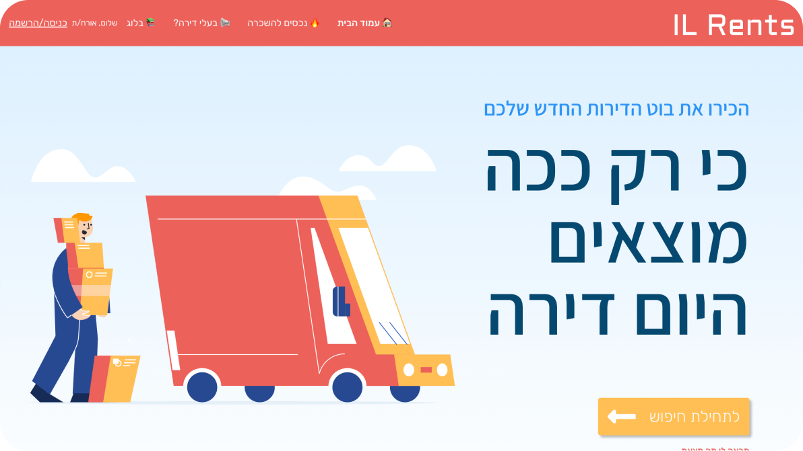
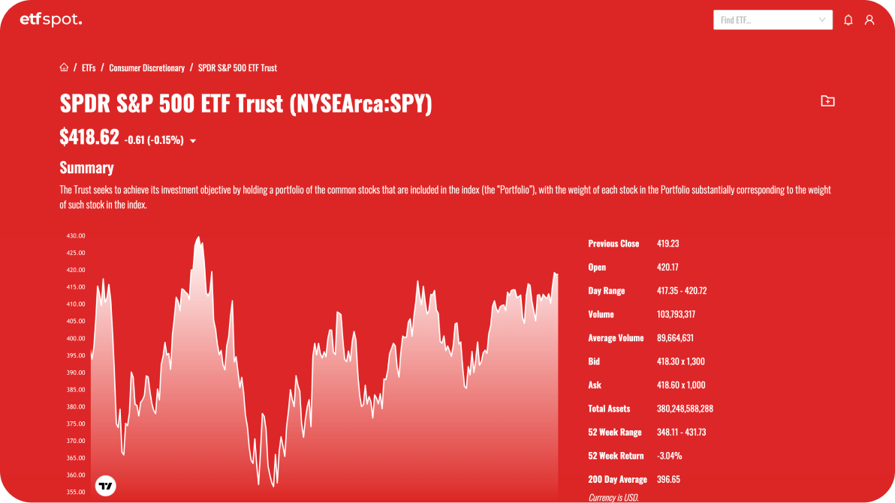
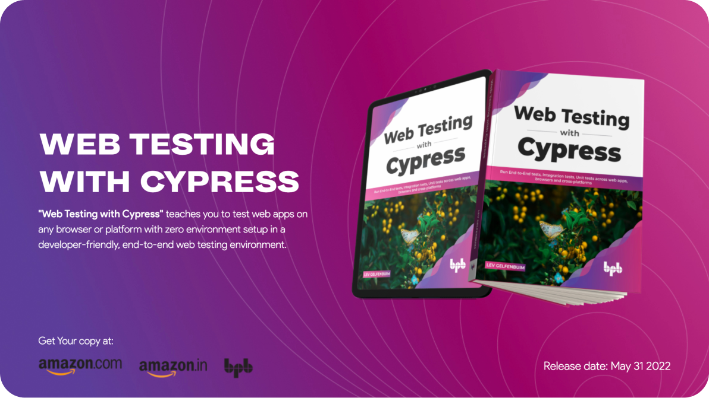

≡

react
nodejs
elasticsearch
angular
nextjs
mongodb
vue
nuxtjs
puppeteer
prisma
postgress
cypress
gpt
aws
gcp
azure
midjourney
docker
expressjs
cheerio
Services
Full-stack Development
- Expertise in building end-to-end web applications.
- Proficient in front-end technologies such as HTML, CSS, JavaScript, and modern frameworks like React or Angular.
- Strong backend development skills using popular programming languages like Python, Java, or Node.js.
- Experience in working with databases, RESTful APIs, and version control systems.
- Implement secure authentication and authorization mechanisms to protect user data and ensure secure access to the application.
Tech Lead as a Service
- Provide technical leadership and guidance to development teams.
- Help in architectural design, code reviews, and performance optimization.
- Collaborate with stakeholders to align technology strategies with business goals.
- Mentor and train junior developers to foster growth and maintain code quality.
- Define and enforce coding standards, best practices, and development methodologies to ensure consistency and maintainability across projects.
Data Services
- Provide data extraction and scraping services to gather information from various sources.
- Proficient in utilizing tools like Scrapy, Cheerio, Puppeteer, Playwright, or Selenium for web scraping.
- Process and clean collected data to provide valuable insights and analysis.
- Develop custom data pipelines or APIs for seamless data integration and manipulation.
- Implement data validation and quality assurance techniques to ensure the accuracy, completeness, and integrity of collected data.
Automation Engineering
Let's talk- Automate repetitive tasks and streamline workflows to increase efficiency.
- Expertise in leveraging automation frameworks and tools such as Selenium, Puppeteer, or Appium.
- Develop custom scripts and workflows tailored to specific business needs.
- Integrate automated testing and deployment processes for continuous integration and delivery.
- Utilize generative AI tools to automate tasks and processes, leveraging the power of artificial intelligence to generate code, designs, or other assets.
Projects

01
Description:NetSafeGuardian is a hardware device based on the Raspberry Pi Model 3B+ designed to enhance network security by filtering ads and blocking malicious websites at the network-level. The device provides a plug-n-play solution that ensures a safe and secure browsing experience for all connected devices.
Show more...
Role:As a one-man-show, I took on the responsibility of conceptualizing, designing, and developing the NetSafeGuardian project. I handled all aspects of the project, including hardware setup, software configuration, website development, and remote management.
Challenges:During the development process, I encountered several challenges that needed effective solutions to ensure the success of the project:
- Plug-n-Play Functionality:Creating a device that could be easily connected to the network without complex setup procedures was essential to provide a user-friendly experience.
- Stability and Uptime:Ensuring the device remained stable and had 100% uptime, even after internet or power outages, was crucial to provide uninterrupted protection and reliable performance.
- Always Up-to-Date:Keeping the device's software and security filters always up-to-date with the latest threat intelligence was a critical challenge to maintain optimal security levels.
- Telemetric and Remote Support:Establishing telemetric capabilities and remote management features were necessary to monitor device performance, provide remote assistance, and ensure seamless operation.
Solutions:To overcome these challenges and deliver a robust solution, I implemented the following solutions:
- Website Development with Next.js + Static Site Generation (SSG):Utilizing Next.js with Static Site Generation allowed me to create a website that provided clear information about NetSafeGuardian, its features, and benefits. It also facilitated seamless updates and easy content management.
- Device Configuration:The NetSafeGuardian device was built using the Raspberry Pi Model 3B+ and ran Ubuntu Server 22.10. This configuration provided a stable and reliable foundation for the device's operation.
- Monitoring and Telemetric:I incorporated Netdata, a powerful monitoring tool, to track device performance, network activity, and telemetric data. This allowed me to identify any issues promptly and ensure optimal hardware utilization.
- Remote Management with Saltstack:By utilizing Saltstack, a remote management and configuration tool, I enabled remote support and management of NetSafeGuardian devices. This allowed me to apply software updates, modify configurations, and provide remote assistance efficiently.
- Blocking Malicious Websites and Ads:I leveraged AdGuard Home, a popular DNS-based ad-blocking and filtering software, to block malicious websites and filter out unwanted ads at the network-level, ensuring a safe and pleasant browsing experience.
Results:The implementation of these solutions yielded significant results for NetSafeGuardian:
- 100% Uptime and Self-Recovery:NetSafeGuardian devices achieved 100% uptime, thanks to their stable hardware setup and automatic recovery mechanisms that restored functionality after internet or power outages.
- Optimal Hardware Utilization:By monitoring device performance using Netdata, I ensured that the NetSafeGuardian device utilized hardware resources efficiently, resulting in optimal performance and responsiveness.
- Fully Configurable Remotely:The remote management capabilities enabled by Saltstack allowed for easy and efficient configuration of NetSafeGuardian devices, even when located in different geographical locations.
Show less...

il rents02
Description:IL Rents is an online platform catering to individuals seeking apartments for rent in selected cities across Israel. Alongside the web platform, Rents Bot offers a user-friendly Telegram bot that provides real-time updates and personalized recommendations for rental properties.
Show more...
Role:As a one-man-show, I took on the responsibility of designing, developing, and managing the entire Rents Bot project. From frontend and backend development to data aggregation and integration with the Telegram bot, I handled all aspects of the platform's creation.
Challenges:Throughout the development process, I faced several notable challenges that demanded effective solutions to ensure the success of the project:
- SEO Optimization:Establishing strong search engine visibility was vital for attracting organic traffic and positioning Rents Bot as a go-to platform for apartment rentals.
- Responsiveness:Creating a highly responsive platform that delivers an exceptional user experience across various devices and screen sizes was crucial to meet users' diverse needs.
- Fast and Real-Time Updates:Providing real-time property updates and maintaining fast load times were essential for delivering timely information to users.
- Data Aggregation and Integration:Aggregating data from various Israeli online apartment boards and integrating it seamlessly into the platform posed a unique data management challenge.
- Blog Implementation:Creating a blog section using Markdown and Gray-Matter, a frontmatter parser, allowed for easy content management and efficient organization of blog posts.
Solutions:To address these challenges and ensure optimal performance, I implemented the following solutions:
- Nuxt.js + Server-Side Rendering (SSR):Leveraging Nuxt.js, a powerful Vue.js framework, combined with Server-Side Rendering, ensured fast initial page loads and improved SEO performance by enabling effective indexing by search engines.
- Data from All Israeli Online Apartment Boards:Integrating data from various online apartment boards in Israel enabled comprehensive property listings and real-time updates for users, enhancing the platform's value.
- Telegram Bot Integration:The development of a Telegram bot complemented the web platform, providing users with personalized property recommendations, instant notifications, and a seamless user experience within the Telegram messaging app.
Results:The implementation of these solutions yielded remarkable outcomes for IL Rents:
- Modern Technology Stack:Adopting Nuxt.js, SSR, and real-time data integration solidified Rents Bot as a cutting-edge platform, offering users an immersive and dynamic experience.
- Great SEO Results and Media Coverage:Rents Bot achieved exceptional SEO results, securing top positions in Google search results for various apartment rental queries. This, coupled with media coverage, bolstered the platform's visibility and attracted a significant influx of organic traffic.
- Fast Load Times, Lazy Loading, and Responsive Design:The incorporation of optimized performance techniques, including fast load times, lazy loading, and a responsive design, ensured users experienced a smooth and efficient browsing experience.
- Active Telegram Users:The integration of the Telegram bot garnered an active user base, fostering engagement and facilitating personalized property recommendations and real-time notifications.
Show less...

etf spot03
Description:An online platform dedicated to providing comprehensive analysis and up-to-date news about Exchange-Traded Funds (ETFs). It serves as a go-to resource for investors and financial professionals seeking valuable insights into the ETF market.
Show more...
Role:As a one-man-show, I conceptualized, designed, and developed the entire ETF Spot platform from start to finish. My responsibilities encompassed the full project lifecycle, including frontend and backend development, database management, design implementation, and deployment.
Challenges:Throughout the development process, I encountered several key challenges that required effective solutions to ensure the success of the project:
- SEO Optimization:Ensuring high visibility in search engine results pages was crucial for attracting organic traffic and establishing ETF Spot as a trusted source in the industry.
- Responsiveness:Providing an exceptional user experience across various devices and screen sizes was essential to accommodate the diverse needs of our users.
- Fast and Real-Time Updates:Delivering timely information and real-time updates about ETFs while maintaining fast load times was a significant challenge.
Solutions:To overcome these challenges and deliver a top-notch user experience, I employed the following solutions:
- Next.js + Server-Side Rendering (SSR):I leveraged Next.js, a powerful React framework, combined with Server-Side Rendering. This approach enabled fast initial page loads and improved SEO performance by ensuring search engines can index the website effectively.
- Data from Yahoo Finance, TradingView, and NewsAPI:I integrated data feeds from reputable sources, such as Yahoo Finance, TradingView, and NewsAPI, to provide comprehensive and real-time information about ETFs and industry news.
- GPT:Basic legal aspects covered by GPT-3.0.
Results:The implementation of these solutions resulted in significant outcomes for ETF Spot:
- Modern Technology Stack:The utilization of Next.js, SSR, and real-time data integration positioned ETF Spot as a cutting-edge platform, offering users a seamless and dynamic experience.
- Great SEO Results:The SEO optimization efforts paid off, resulting in high organic search rankings and increased visibility for ETF Spot in search engine results pages. This led to a steady flow of organic traffic and an expanding user base.
- Fast Load Times and Lazy Loading:With Next.js and SSR, ETF Spot achieved impressive load times, ensuring a smooth and responsive user experience. Lazy loading techniques further enhanced performance by loading content as users scrolled, reducing initial load times.
Show less...

web testing with cypress book04
Description:"Web Testing With Cypress" is a comprehensive book, available in both paperback and e-book formats, designed to teach readers how to effectively test web applications on any browser or platform using the Cypress testing framework. The book is published by BPB Publications in May 2022.
Show more...
Key Features:
- Gain insights into visual testing, Cypress Studio, GitHub Actions, and the Cypress Dashboard, enabling developers to create a robust end-to-end web testing environment.
- Utilize Docker images, CI/CD pipelines, and the headless Cypress test runner through practical illustrations and step-by-step instructions.
- Discover the benefits and techniques of using Cucumber for cross-browser and cross-platform testing, providing real-world examples and solutions.
Chapters:
- Introduction to Cypress
- Cypress vs. Selenium WebDriver
- Write Your First Tests
- Advanced Testing Techniques
- Introducing CI/CD
- Introduction to Cypress Dashboard
- Integration of CI/CD into Existing Projects
- Working with Tests as a Team
- Cypress Driven Development (CDD) Approach
- Tests for Product Managers using Cucumber
Role:As the author of "Web Testing With Cypress," I undertook the responsibility of researching, conceptualizing, and writing the content of the book. Drawing from my expertise and experience in web testing and Cypress, I aimed to create a resource that is informative, practical, and appealing to readers.
Challenges:The primary challenges I encountered during the creation of this book were to make it engaging and captivating for readers while providing them with real-world use-cases and a wide range of examples. I aimed to strike a balance between technical depth and accessibility to ensure readers of varying skill levels could benefit from the material.
Solutions:To address these challenges, I dedicated six months to intensive research and writing. This allowed me to gather a comprehensive understanding of web testing with Cypress and ensured that the content provided valuable insights, practical examples, and relatable use-cases. By focusing on clarity and practicality, I aimed to make the book an enjoyable and valuable resource for readers.
Results:"Web Testing With Cypress" has achieved considerable success since its publication, with thousands of copies sold worldwide. The book has gained popularity not only among individual readers but also within educational institutions. It has been made available on prominent platforms such as Amazon, eBay, Walmart, and other online retailers, reaching a wide audience.
The positive reception of the book can be attributed to its ability to cater to readers' needs, providing them with actionable knowledge, clear explanations, and real-world examples. The practical insights and comprehensive coverage of web testing with Cypress have positioned "Web Testing With Cypress" as a trusted resource in the field.
Show less...
Companies

Resources
Résumé
Let’s Talk